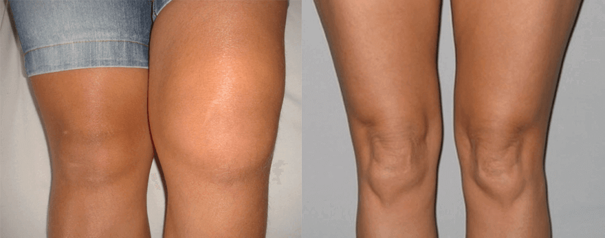

"I metodi italiani di trattamento dell'osteocondrosi provocano solo sconcerto". Un noto reumatologo tedesco ha rilasciato una franca intervista a una pubblicazione italiana.
- Come curare l'osteocondrosi una volta e per 10 anni?
- Come eliminare la "gobba della vedova"?
- Come eliminare i sali dalle articolazioni e vivere una vita piena?
- Perché in Italia 9 medici su 10 non hanno idea di come trattare correttamente la colonna vertebrale e le articolazioni?
A queste domande risponderà il professore tedesco di reumatologia Karl Kirschmeyer.
Il dottor Karl Kirschmayer è il responsabile del Centro di Reumatologia Tumorzentrum Eva Mayr-Stihl presso l'ospedale Charité di Berlino, famoso in tutto il mondo:
La causa dell'osteocondrosi è una sola, ma è quella che 9 medici italiani su 10 ignorano.


Dr. Karl Kirschmeyer: "In Italia l'osteocondrosi è ancora trattata con farmaci obsoleti e inefficaci che richiedono un uso costante per tutta la vita. In Germania, invece, l'osteocondrosi viene trattata con la stessa facilità di un naso che cola: una volta sola e per 10 anni".
L'anno scorso Carl Kirschmeier è venuto in Italia per studiare l'esperienza dei suoi colleghi italiani. Quello che ha visto in Italia, ha detto, non si spiega. Secondo Karl, nel nostro Paese la reumatologia è ferma alla metà del secolo scorso.
Dopo aver pronunciato discorsi ad alta voce in Germania, il dottor Karl Kirschmeyer accettò di rilasciare un'intervista a una pubblicazione italiana. Che cosa non piace al famoso medico della medicina russa? E perché sostiene che i cittadini italiani affetti da osteocondrosi non potranno mai diventare sani?
- Parlando con i giornalisti tedeschi, lei ha detto che ciò che ha visto in Italia l'ha scioccata. Vorrebbe commentare questa affermazione?
- Voglio subito dire che ho un buon atteggiamento nei confronti dell'Italia, della cultura italiana e dei cittadini italiani. Ma lo stato della vostra medicina è davvero uno shock per i medici tedeschi. La vostra medicina è indietro di almeno 20, forse anche 30 anni. In ogni caso, nel trattamento delle malattie della colonna vertebrale e delle articolazioni. Si può dire che una scienza come la reumatologia non esiste in Italia.
Vediamo cosa offrono i medici per il trattamento dell'osteocondrosi e delle articolazioni in Italia: Viprosal, Dolgit, Voltaren\Fastum gel, Diclofenac, Teraflex, Nurofen e altri farmaci simili.
Tuttavia, questi farmaci NON guariscono la colonna vertebrale, ma si limitano ad alleviare i sintomi della malattia: dolore, infiammazione e gonfiore. Immaginate ora cosa succede a livello del corpo. Quando una persona prende una pillola, applica un gel anestetico o fa un'iniezione, il dolore scompare. Ma non appena il farmaco smette di funzionare, il dolore torna subito.
Il dolore è un segnale importante: segnala la presenza di un processo patologico nella colonna vertebrale. Solo annegando il dolore, il reparto colpito è sottoposto a effetti distruttivi ancora maggiori. Il processo di distruzione accelera di 3-5 volte e alla fine porta a cambiamenti irreversibili, alla completa immobilità e alla disabilità.
Questo metodo di trattamento del dolore alla schiena e alle articolazioni non viene più utilizzato in Germania da oltre 20 anni. I farmaci antidolorifici vengono utilizzati solo in casi estremi, in modo molto specifico e attento. In Germania sono venduti solo su prescrizione medica e sotto stretto controllo.
I cosiddetti "condroprotettori" sono completamente vietati, in quanto farmaci assolutamente fraudolenti e inutili.
I vostri medici e farmacisti stanno solo storpiando le persone! È chiaro che è più redditizio vendere costantemente prodotti costosi per eliminare i sintomi piuttosto che curare la malattia una volta per tutte, ripristinare la colonna vertebrale in deterioramento, ma è impossibile!
- E come vanno le cose in Germania per quanto riguarda il trattamento dell'osteocondrosi?
- Tutti i medici tedeschi, dai professori di reumatologia ai medici generici e paramedici, hanno capito da tempo che non sono le conseguenze della malattia a dover essere trattate, ma le sue cause. Questa è la chiave per una cura completa, rapida e sicura. Qual è la causa principale dell'osteocondrosi? È la deposizione di ortoliti sui dischi intervertebrali!
Gli urati sono i veri sali dell'acido urico, causa della gotta, per esempio.
Gli osteofiti - sali calcificati - sono la causa principale dell'osteocondrosi. Inoltre, provocano quasi il 97% delle altre malattie articolari. Tutti i tipi di artrite e artrosi, osteocondrosi, osteoporosi, reumatismi, borsiti e persino igroma. Tutte queste malattie hanno una causa: i depositi di osteofiti.
I sali depositati sulle superfici della colonna vertebrale o dell'articolazione, come carta vetrata, affilano i tessuti circostanti: ossa, cartilagine, nervi, tendini, midollo spinale. Crescendo, i cristalli di orthosol iniziano a ferire il tessuto muscolare, i vasi e i capillari. Questo provoca infiammazione, infezione, gonfiore e forte dolore. Nel caso dell'osteocondrosi questo è particolarmente pericoloso! L'infiammazione in qualsiasi parte della colonna vertebrale spesso porta a un'infezione del midollo osseo e allo sviluppo della leucemia.
Nei casi più avanzati, grossi ammassi di ortesi possono facilmente staccarsi da una parte dell'osso, quando ci si muove all'improvviso, causando così una completa inabilità e l'immobilizzazione permanente della persona.
È un'idea sbagliata molto pericolosa che il calcio sia utile per la salute della colonna vertebrale e delle articolazioni. Sì, il calcio è utile, ma lo è solo per articolazioni e schiena sane. Quando le articolazioni fanno già male o scricchiolano, fanno male alla schiena o al collo, significa che si è già formato uno strato di osteofiti, e il calcio, oltre a rafforzare il tessuto osseo, rafforza e sale gli osteofiti, aggravandone e accelerandone la crescita eccessiva.
Per questo motivo, i reumatologi tedeschi innanzitutto ammorbidiscono i sali e ripristinano la circolazione sanguigna, in modo da eliminare gli urati e gli osteofiti accumulati nel corso degli anni. Questo, a sua volta, ripristina la normale circolazione del liquido sinoviale e innesca il processo di riparazione ossea.

Le "escrescenze" di ortoliti possono essere meglio osservate nella colonna vertebrale cervicale dalla cosiddetta "gobba della vedova".
In realtà, la colonna vertebrale e le articolazioni umane sono molto rigenerative, sanno ripararsi da sole, come la coda di una lucertola. È sufficiente un piccolo aiuto per liberarle dagli ortesi "appiccicose" che le ricoprono, e il processo andrà avanti da solo.
Negli anni '90 del secolo scorso, gli scienziati svizzeri sono riusciti a ottenere una forma speciale di quasi-vitamina B, il cosiddetto alfa-artroferolo. Si ottiene attraverso la sintesi di ingredienti naturali: Veleno di serpente, corna, olio di squalo, oltre a un insieme di più di 50 estratti diversi.
Questa sostanza è in grado di penetrare nelle molecole degli ortolani e di strapparle dall'interno: di conseguenza, le superfici dei dischi spinali vengono pulite, il flusso sanguigno e la circolazione del liquido spinale vengono ripristinati. PER SEMPRE! O più precisamente finché i sali non si accumulano di nuovo (ma ci vorranno decenni). Non è più necessario ricorrere a farmaci per il dolore e l'infiammazione. Non si deve temere che un giorno la schiena sia "bloccata" per sempre, completamente priva di mobilità, e che sia necessario un intervento chirurgico. Le persone diventano completamente sane per decenni.
Quando ho visto le statistiche mediche italiane, mi si sono rizzati i capelli in testa. Sapete qual è la causa più comune di disabilità in Italia? Non è il cancro, né l'AIDS, né il diabete, ma l'osteocondrosi! La più semplice osteocondrosi, che in Germania può essere curata in 2-3 settimane con farmaci non costosissimi, in Italia porta alla disabilità! E spesso anche mortale a causa di infezioni generali e danni al midollo spinale.
Oggi in Germania le malattie della colonna vertebrale e delle articolazioni non sono considerate patologie pericolose, a meno che non si tratti di gravi lesioni traumatiche: fratture, schiacciamenti, rotture, ecc. Il dolore e l'infiammazione della colonna vertebrale e delle articolazioni sono solo il segno che sono "inquinate" da sali ed è ora di pulirle. Dopo un ciclo di 2-3 settimane di "pulizia" tutto torna alla normalità e i problemi possono essere dimenticati per un decennio.
Le malattie della colonna vertebrale e delle articolazioni, che in Italia si cerca di "trattare" separatamente, in Germania sono state a lungo riunite in un'unica malattia "Artoninio de sales" (formazioni saline delle articolazioni). Questa malattia comprende:
- Osteocondrosi;
- Gotta;
- Artrite;
- Osteoartrite;
- Reumatismo;
- Osteoporosi;
- Borsite;
- Sinovite;
- Igroma;
Questo è un elenco molto breve, ma le altre malattie sono solo sottospecie di queste nove patologie di base. Ad esempio, la coxartrosi è una sottospecie di artrite, la gobba della vedova è uno stadio dell'osteocondrosi, ecc.
E tutto questo lungo elenco di dolori si cura molto semplicemente, con una banale pulizia a base di orthosol. Assolutamente sicura, che non richiede nemmeno l'assistenza di un medico e si fa a casa.
- Come si "pulisce" l'osteocondrosi in Germania?
- Oggi esistono preparati speciali studiati per pulire la colonna vertebrale e le articolazioni dai depositi di sale. Contengono alfa-artroferolo. Il leader tra questi è la crema "Nanoflex". Contiene alfa-artroferolo in una forma speciale, facilmente digeribile, grazie alla quale il farmaco ha una maggiore efficacia. "Nanoflex" è l'unico prodotto con licenza GSP che si è dimostrato sicuro per l'uso domiciliare nel trattamento dell'osteocondrosi.
Un altro importante vantaggio di "Nanoflex" è che contiene un complesso di artro-vitamine sistemiche, macro e micronutrienti studiati per migliorare i tessuti della colonna vertebrale. Ha cioè un effetto rivitalizzante completo sul tessuto osseo e cartilagineo, sul liquido sinoviale, sulle fibre muscolari, sui tessuti di legamenti, vasi e tendini. Ha una gamma molto ricca di effetti coproduttivi.
La composizione di"Nanoflex" comprende più di 50 componenti. Non li elencherò tutti, ma solo i principali:
|
Arto-Vitamina B3 |
Rafforza e tonifica il tessuto cartilagineo, ne aumenta l'elasticità e la resistenza all'abrasione |
|
Vitamina A |
Normalizza la permeabilità dei piccoli capillari |
|
Mentolo |
Riduce le infiammazioni e le infezioni dei tessuti, arresta i processi di decadimento |
|
Alfa-artroferolo |
Distrugge i depositi di orthosol, li ammorbidisce e li scompone in elementi escrementizi |
|
Vitamina B3 |
Dilata i vasi sanguigni, migliora il flusso sanguigno nell'area interessata |
|
Comfrey medicinale |
Accelera i processi di rigenerazione dei tessuti della colonna vertebrale |
|
Olio di squalo (alfa elementi) |
Normalizza la circolazione del liquido sinoviale |
- "Nanoflex", per quanto ne sappiamo, non è venduto nelle farmacie italiane?
- Questo è il punto, no. I medici italiani preferiscono "nutrire" la popolazione con tonnellate di anestetici e condroprotettori, piuttosto che impegnarsi in un vero trattamento.
Non c'è dubbio che i reumatologi italiani, almeno quelli interessati a metodi di trattamento progressivi, conoscano il "Nanoflex" e la sua capacità riparativa nell'osteocondrosi. Ma non corrono il rischio di prescrivere un farmaco che non è nella lista del Ministero della Salute.
Per quanto ne so, il produttore del "Nanoflex" voleva entrare nel mercato italiano. Ma non gli è stato permesso, avendo inventato centinaia di ostacoli (la burocrazia in Italia è inestinguibile). È comprensibile: se questo farmaco apparirà nelle farmacie, la mafia farmaceutica russa subirà enormi perdite. Dopo tutto, la farmacologia oggi è un business! Anche in Germania. Ma in Germania gli affari sono controllati dallo Stato, mentre su quello che succede in Italia non mi pronuncio: lei lo sa bene.
- Che consiglio darebbe alle persone affette da gotta che vivono in Italia?
- La gente comune, soprattutto gli over 50, è quella che soffre di più per l'arretratezza della medicina italiana. Non è colpa loro, è solo il modo in cui è impostato il sistema sanitario.
Ma per fortuna c'è una via d'uscita. Abbiamo concordato con il Centro Italiano di Ricerca Scientifica per la Reumatologia di concedere sconti sul farmaco a tutti i cittadini italiani che hanno problemi alla colonna vertebrale e alle articolazioni. Il personale del CRS ha allestito un centro di distribuzione speciale e noi abbiamo fornito il lotto di farmaco necessario. Ora tutti i cittadini italiani possono prescrivere "Nanoflex" con uno sconto fino al 50%
Sono ormai tre mesi che mettiamo in palio "Nanoflex". Diverse migliaia di cittadini italiani hanno già approfittato di questa opportunità. Chiediamo a tutti coloro che hanno ricevuto "Nanoflex", di valutare l'utilità del farmaco su una scala da 1 a 10. Al momento più di 3.000 persone hanno partecipato al sondaggio e la valutazione media del preparato è di 9.97 su 10.
Come si vede, "Nanoflex" è un farmaco che ha aiutato i pazienti. Come potete vedere, Nanoflex ha già aiutato migliaia di italiani a diventare mobili e a sbarazzarsi dell'osteocondrosi, della gobba della vedova e dei dolori articolari, e voi potete unirvi a loro.
- Come si può ottenere uno sconto su "Nanoflex"? Sono necessari certificati o passaporti?
- È sufficiente risiedere nella nostra regione e avere più di 30 anni. "Nanoflex" viene spedito direttamente dal magazzino e consegnato tramite corriere. Abbiamo ritenuto improduttivo trasportare il farmaco nella regione e organizzarne la distribuzione presso qualche indirizzo, con lunghe file e attese. Le persone affette da osteocondrosi soffrono già ogni giorno, e noi le costringeremo a fare la fila e a subire lo stress. E così tutto è stato semplice: abbiamo compilato un modulo, lasciando una richiesta con il nome e il numero di telefono, abbiamo aspettato una chiamata, abbiamo dato l'indirizzo e un orario conveniente per la consegna. Poi un corriere "Nanoflex" ha portato lo stock all'indirizzo da noi indicato.
ATTENZIONE: è possibile ottenere "Nanoflex" con uno sconto del 50% nell'ambito di una promozione del distributore. Per farlo, aprire la scatola e ottenere lo sconto, compilare il modulo d'ordine qui sotto fino al (compreso). La quantità di prodotti in promozione è limitata.


Riprova!
Affrettati! Hai ancora tempo:
20 : 00
La crittografia è utilizzata per garantire la protezione dei vostri dati.

Incredibile, ho ricevuto un pacchetto Nanoflex con uno sconto. Utilizziamo Nanoflex a casa da molto tempo, ma lo abbiamo acquistato a un prezzo molto più alto.

Proverò sicuramente Nanoflex, perché con la stagione della dacia - subito mi fanno male le mani, le dita non si possono piegare.

Vi faccio vedere le mie mani prima e dopo. Giudicate voi stessi


Ordinato Nanoflex, lo porterò ai miei in paese, i vecchietti soffrono da tempo con i piedi.

Meno male che ho fatto in tempo ad ordinare a questo prezzo! Ho mandato il link alla mia amica, ma il prezzo è già salito...

Ieri mi sono arrivate 2 portate di Nanoflex, direttamente a casa mia e di mia mamma.


Nanoflex mi ha aiutato molto! Il mio ginocchio era gonfio e non riuscivo a piegare la gamba. Mio padre mi ha portato Nanoflex da qualche parte e grazie a Dio! Vedete la differenza:


Per favore condividete, chi l'ha usato? Qualche risultato?

L'ho preso per la cura delle mie ginocchia, all'inizio non ho notato nulla, ma il secondo giorno l'infiammazione e il gonfiore sono diminuiti. Ho ancora dolore, ma continuo ad usarlo, penso che di questo passo tornerò presto alla normalità.


Ho una situazione un po' particolare. Quando ero giovane, ho infilato la mano in una sega circolare e ho perso le falangi delle dita... Ora le dita mi fanno molto male, soprattutto con il brutto tempo. I medici hanno detto che si tratta di un dolore fantasma, che non può essere curato, ma devo prendere degli antidolorifici. Alla fine mi sono imbattuto in Nanoflex, l'ho ordinato e l'ho provato. Dopo una settimana di utilizzo i dolori sono spariti, ma userò più lubrificazione come da istruzioni.

Mia mamma è stata letteralmente salvata grazie a Nanoflex! Come è scritto qui, dopo l'infiammazione, la malattia si è sviluppata rapidamente e lo scorso inverno mia mamma ha letteralmente smesso di camminare! Nanoflex è stato di grande aiuto in quel momento. Ora ordinerò altre 2 confezioni a prezzo scontato, sarebbe meglio averlo a portata di mano.

Fate attenzione! Ho ordinato su un altro sito e il pacco non è proprio arrivato! Meno male che non mi hanno fatto pagare nulla. È stato molto deludente aspettare invano.

Ho visto questo articolo appena in tempo. Le ginocchia mi fanno male per la seconda settimana, ho molta paura dello sviluppo della malattia.

Ordinato, portato abbastanza velocemente il terzo giorno. Ora è interessante provarlo!
Evviva! Sono stata tra i fortunati, sono riuscita ad ordinare Nanoflex con uno sconto! Incredibilmente semplice!